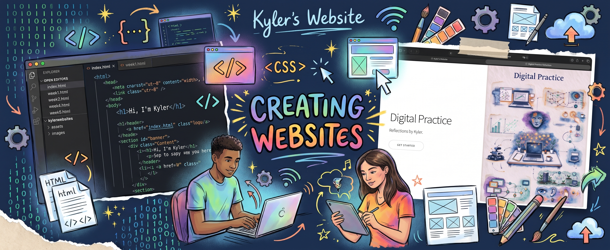

Week 2

Schedule for this week:
Workshop 2h + Lecture 1h
Workshop: Creating Websites
In the workshop of Week 2, we concentrated on creating websites. Before this class, I had no experience on coding. Therefore, it was something completely new to me. To better prepare and understand this workshop, I learned the online course from Codeacademy recommended by Holly.
During the workshop, we were introduced to tools and methods to create a website, including CampusPress and GitHub Pages. CampusPress provided an easier way to build and manage websites without having to write all the code ourselves. We also explored GitHub, where we could upload our website files and publish the website online through GitHub Pages. I learned how to create a basic webpage using HTML and how to use CSS to change its appearance and layout.
Futhermore, I found useful was the idea of creating an online portfolio. It provides an opportunity to collect and showcase my projects, skills and learning progress throughout the course. I think this will be particularly useful for developing my digital media skills and presenting my work in the future.
Overall, this workshop helped me develop a basic understanding of website creation and online publishing. I would like to explore more design features and improve my website in the coming weeks.
Lecture: Understanding Digital Media
In week 2, the lecture focused on the development of digital media, particularly the transition from the early internet to the platform society. We explored how the internet has changed over time, from the World Wide Web in the 1990s to Web 2.0 and the rise of social media platforms in the 2000s.
One of the key topics was the concept of the platform society. Digital platforms are not simply spaces for communication and information sharing. They also collect user data, use algorithms to organise content and generate economic value. This helped me understand the important role that platforms play in our everyday lives.
We also learned about algorithms and how they influence the information we see online. Algorithms are designed to process data and provide certain results, but they are also influenced by human decisions and social, political and economic factors.